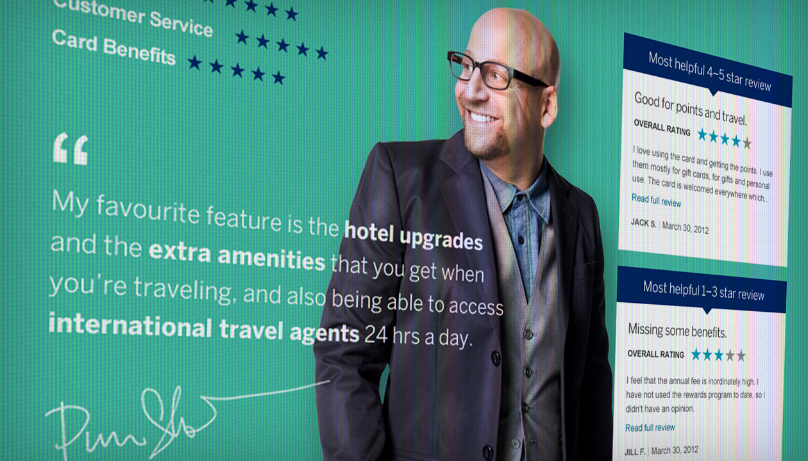
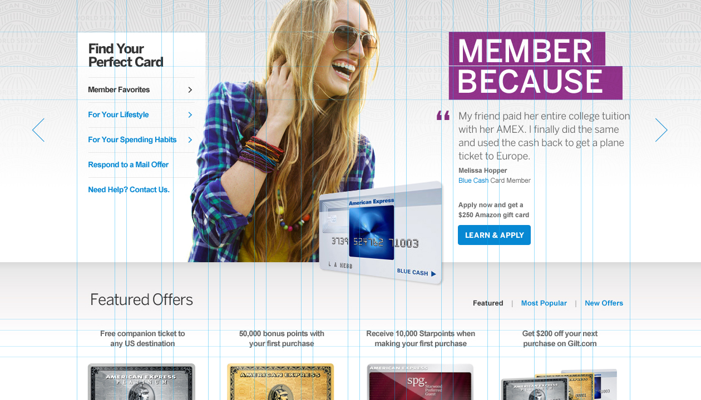
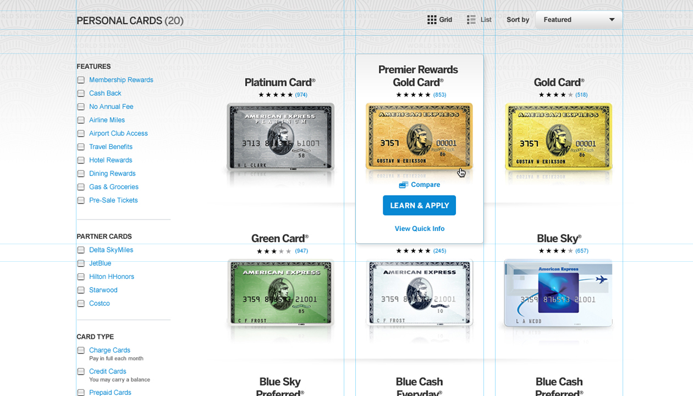

American Express
The campaign I built from transcripts.
American Express sold twenty personal cards and most people could not tell them apart. Most card brands answer that with soaring aspiration. Instead I worked from interviews with actual cardmembers, built the personas out of what they said rather than out of a segmentation deck, and ran the campaign on their own words: real members, named, beside the card they carry, surfaced inside the shopping flow rather than collected on a testimonials page nobody visits.
Sole writer on the project. Everything had to work on a phone in 2013, which meant the campaign line and the interface label were often the same words.
“Real Cardmembers. Real Reviews.”
The campaign line




The interview process was as much reporting as writing. Finding the piece inside a raw transcript, and deciding which quote carries the argument, is a journalist's job before it is a copywriter's. I used the same approach later on the Audi documentary and the Lincoln centennial film.